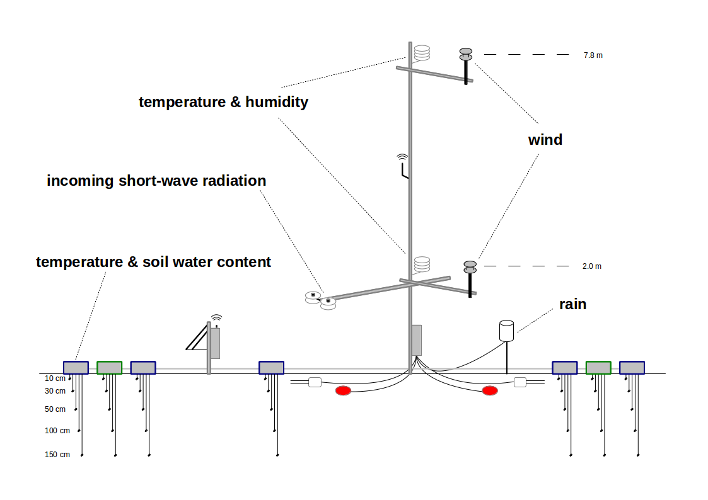

<div ng-switch="firstCall">
    <div ng-switch-when="true">
        <div ng-include="'components/pageStructure/pageStructure.html'"></div>
    </div>
    
    <div ng-switch-when="false">
        
    </div>
</div>